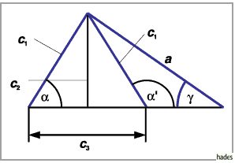

Arten von Dreiecken
- Gleichschenkliges Dreieck:
- Im gleichschenkligen Dreieck sind zwei Dreieckseiten gleich lang. Höhe, Seiten- und Winkelhalbierende der dritten Seite sind identisch. Für die Gleichschenkligkeit des Dreiecks ist die Gleichheit je zweier dieser Seiten eine hinreichende Bedingung.

- Gleichseitiges Dreieck:
- Im gleichseitigen Dreieck mit a=b=c fallen die Mittelpunkte des In- und des Umkreises mit dem Schwerpunkt und dem Orthozentrum zusammen.
- Rechtwinkliges Dreieck:
- Rechtwinkliges Dreieck wird ein Dreieck genannt, das sich durch einen Winkel von
 in einer der Dreiecksecken auszeichnet.
in einer der Dreiecksecken auszeichnet.